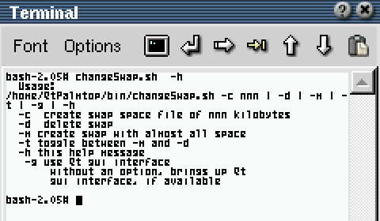

changeSwap.sh
Finally, someone else made a Qtopia Gui interface to do this. I haven't tested it thouroughly yet, but I'd recommend you give qswap a try before you use my script below. Qswap can be found on the Zaurus Software Index Qswap Entry.
Download ipk of
Quickly and easily change free storage space into
extra swap space, giving more usable memory,
and less out of memory errors.
It can be used from the terminal for flexibility:

or directly from Qt for ease of use:
First: ,
then:
Qt functionality given by : opie-sh
The most urgent bug :
A unique, appropriate and cool icon. (Current icon stolen from Gonz's filesystem mounter [Sorry Gonz!]) I've had one now for months, but I still haven't gotten around to making a new package. Sorry. If anyone wants it, e-mail me and I'll be more likely to get around to it.
See the script comments for other known bugs.
Current version:
version 0.1, (5/15/2002); includes ash script, and the above icon. I didn't include the README file, as I do not know an appropriate place for it.
For the curious, I'll make the current version on my Zaurus available, although it will probably always be very close to the released version above.
I have found Aaron's brief write up and link to this program, and have mirrored it here as a Description of how to Enable swap space.
Developed almost exclusively on the SL-5000d with
JCryptPad
by Howard Abbey hrabbey@surfbest.net